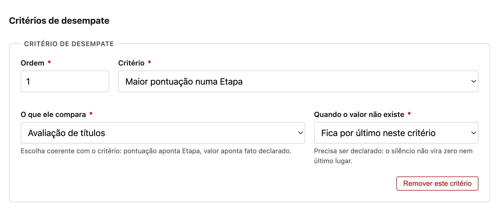
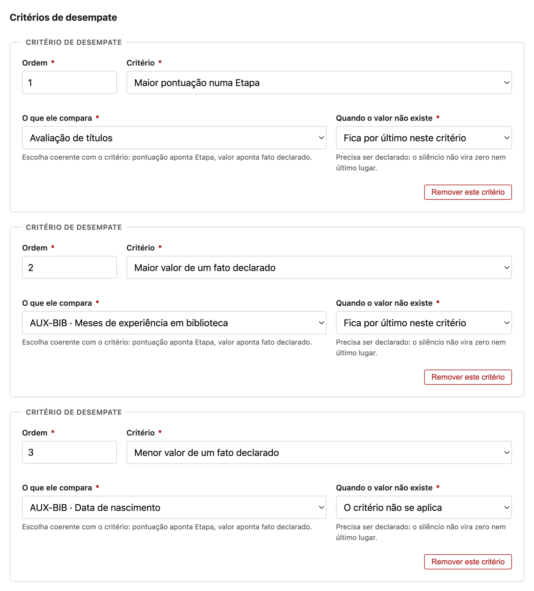

Esta página é um espécime, não um capítulo. C-08 completo cobre Etapas de avaliação, as duas formas de conclusão, pesos, Marco Classificatório, normalização, arredondamento, fatos declarados e a janela recursal. Aqui está só o desempate — três passos e duas capturas —, porque é a parte com mais decisão por centímetro de tela, e é ela que põe o padrão à prova.
Quem faz isto
Elena, elaboradora, no passo Classificação do assistente, dentro do marco classificatório que ela já criou.
Quando fazer
Depois de as Etapas existirem (passo Etapas de Avaliação) e de o marco já enumerar quais delas entram na ordem. Um critério que compara uma Etapa precisa que a Etapa exista; um que compara um dado do candidato precisa que esse dado esteja declarado no perfil.
O que um critério de desempate é
Quando duas pessoas terminam com a mesma pontuação combinada, o sistema não escolhe uma delas por conta própria — ele aplica, na ordem, os critérios que o Edital declarou. Cada critério é uma comparação: quem tiver o maior valor de alguma coisa fica na frente. Se o primeiro critério não separar, aplica-se o segundo, e assim por diante. Se nenhum separar, as duas ficam na mesma posição, e o resultado publica posição compartilhada.
Um critério declara três coisas, e as três são obrigatórias:
- Que comparação ele faz — maior pontuação numa Etapa, maior valor de um dado declarado, ou menor valor de um dado declarado.
- O que exatamente ele compara — qual Etapa, ou qual dado. Um critério que diz "maior pontuação" sem dizer em qual Etapa não é uma regra: é uma frase.
- O que fazer quando o valor não existe — porque ele vai faltar. Alguém não terá o dado declarado, e o Edital precisa ter dito de antemão o que acontece nesse caso.
Compor o critério
-
No marco, clique em Acrescentar critério.
Nasce um cartão vazio ao fim da lista de critérios, com quatro campos.
-
Preencha a Ordem, escolha o Critério e diga em O que ele compara qual Etapa ou qual dado.

① A ordem é a norma: é ela que diz qual critério tenta separar primeiro, e não a posição do cartão na tela. ② A comparação. ③ O alvo dela — a lista só oferece o que é coerente com ②: pontuação aponta Etapa, valor aponta dado declarado. ④ O comportamento na falta, que é o passo 3 abaixo. O cartão fica completo. Nada foi gravado ainda — o rascunho só grava quando você salvar.
-
Declare em Quando o valor não existe o que acontece com quem não tem aquele dado.
Há duas saídas, e elas produzem resultados diferentes: Fica por último neste critério mantém a pessoa na comparação e a coloca atrás de todos os que têm o dado; O critério não se aplica faz o desempate pular para o critério seguinte para aquele par.
O campo deixa de estar pendente. Ele não tem valor por omissão de propósito.
-
Clique em Salvar rascunho.
Os critérios ficam gravados na ordem declarada, prontos para o passo Revisão.
Atenção
Um critério precisa dizer o que compara. Se você deixar O que ele compara em branco, o passo Revisão acusa uma pendência impeditiva e o Edital não pode ser submetido. É o erro mais comum deste passo, e ele só aparece lá na frente — confira aqui.
Os três critérios do Edital-exemplo, na ordem
No Edital de Auxiliar de Biblioteca, Elena declarou três, e a ordem entre eles é a norma que o resultado vai citar quando desempatar alguém:

| Ordem | Compara | Sentido | Se o valor faltar |
|---|---|---|---|
| 1 | Pontuação na Etapa Avaliação de títulos | maior na frente | fica por último neste critério |
| 2 | Dado declarado Meses de experiência em biblioteca | maior na frente | fica por último neste critério |
| 3 | Dado declarado Data de nascimento | menor na frente | o critério não se aplica |
Por trás disto
Os dados declarados que os critérios 2 e 3 consomem são os mesmos que o candidato preenche na última tela da inscrição, e que congelam no envio (C-12). É por isso que a ordem de elaboração importa: um critério só pode apontar um dado que o perfil já declara exigir. Declarar o dado depois de publicar o Edital exige Retificação, e as inscrições já enviadas não voltam para preenchê-lo.
Dica
Escreva os critérios lendo em voz alta: "empatou? ganha quem tirou mais em Avaliação de títulos; se ainda empatou, quem tem mais meses de experiência; se ainda empatou, o mais velho". Se a frase não fecha, a regra também não — e é melhor descobrir isso aqui do que na hora de emitir a ordem.
Você terminou quando…
…cada critério mostra uma comparação, um alvo e um comportamento na falta, as ordens são distintas e começam em 1, e o passo Revisão não acusa nenhuma pendência nos critérios de desempate.